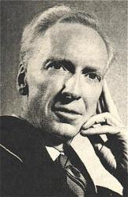

|
¡@ |
¡@ |
|
¡@1) Our blessed Lord was slain, He rose triumphantly, 3) The stone was rolled away,
|
¡@ |
|
¡@
|
|
|
¡@ |
¡@ |


|
¡@ |
¡@ |
|
¡@1) Our blessed Lord was slain, He rose triumphantly, 3) The stone was rolled away,
|
¡@ |
|
¡@
|
|
|
¡@ |
¡@ |

¡@
¡@
| Text: | He Rose Triumphantly |
| Author: | Oswald J. Smith |
| Tune: | HE ROSE TRIUMPHANTLY |
| Composer: | Bentley D. Ackley |
¡@
| Short Name: | Oswald J. Smith |
| Full Name: | Smith, Oswald J., 1889-1986 |
| Birth Year: | 1889 |
| Death Year: | 1986 |
Smith, Oswald Jeffrey. (Odessa, Ontario, November 8, 1889--January 25, 1986, Toronto, Canada).

Presbyterian. Attended Manitoba College, Winnipeg, 1909-1910; Toronto Bible College, 1907-1908, 1910-1912; McCormick Theological Seminary, 1912-1915; further study at Knox College, Toronto; several honorary doctorates. Pastorates in Toronto, 1915-1958; frequently conducted evangelistic meetings and crusades elsewhere. In 1928 he organized the virtually autonomous People's Church, which combines a vigorous evangelistic program in Toronto with an enviable overseas missionary network; in 1958 he relinquished its guidance to his son Paul, but remained its highly active minister emeritus. He published some 35 devotional and inspirational books, which he eventually combined into fourteen; most of his 1200 hymns and poems first appeared in church-connected magazines, but many are found in Poems of a Lifetime (London: Marshall, 1962).
Words: Oswald Jeffrey Smith (b. Nov. 8, 1889; d. Jan.
25, 1986)
Music: Bentley DeForest Ackley (b. Sept. 27, 1872; d. Sept.
3, 1958)
Links:
Wordwise Hymns (Oswald
Smith)
The Cyber Hymnal (Oswald
Smith)
Hymnary.org
Note: Oswald Smith was the pastor of a large church in Toronto for many years, a church well known for its support of world missions. Dr. Smith also wrote about twelve hundred hymns.
It happens every four years. What we call leap year adds another day to the month of February. The reason that¡¦s needed is that earth¡¦s journey around the sun, defining our calendar year and its seasons, takes about 365¼ days. If no allowance were made for the fraction, eventually our summer would be in the winter! February 29th puts us back on track.
Those who are born on that date can only celebrate their actual birth date every four years. Most compromise by partying on February 28th or March 1st the other three years. Hymn writers are not immune to this complication. John Byrom (1691-1763), the author of the Christmas carol Christians Awake, was born on February 29th.
A more unusual phenomenon is having February 29th fall on a Sunday. (The last one was in 2004, and the next comes up in 2032.) Back in 2004, at the church where I served as pastor, we planned to make the worship service on that Sunday as unusual as the date. Noticing that February 29th fell about halfway between Christmas and Easter, we decided to have a program combining the two themes.
At the front of the church was a rugged wooden cross. On one arm of the cross we hung a Christmas wreath, on the other a scarlet cloth representing the shed blood of Christ. The music that day involved both Christmas carols and Easter hymns. My sermon was entitled ¡§The Cradle and the Cross.¡¨
Jesus was born in Bethlehem around 5 BC, and He was crucified on Calvary, outside the city of Jerusalem, in AD 30. But those two events are inseparably bound together in the purposes of God. In a real sense, Christ came to earth to die. Though that was not the only purpose of His coming, it was a dominant one.
As an angel told Joseph, ¡§She [Mary] will bring forth a Son, and you shall call His name JESUS, for He will save His people from their sins¡¨ (Matt. 1:21). And Jesus said He came ¡§to give His life a ransom for many¡¨ (Mk. 10:45). Yes, He died. But as the eternal Son of God, Christ had power over death:
¡§I lay down My life that I may take it again. No one takes it from Me, but I lay it down of Myself. I have power to lay it down, and I have power to take it again. (Jn. 10:17-18).
In prophecy, He said, ¡§You will not leave my soul in Sheol [the place of the dead], nor will You allow Your Holy One to see corruption¡¨ (Ps. 16:10). And Peter, preaching on the Day of Pentecost announced, ¡§God [the Father] raised Him from the dead, freeing Him from the agony of death, because it was impossible for death to keep its hold on Him¡¨ (Acts 2:24, NIV).
We generally sing Christmas carols only around Christmas, but seem to do better with hymns about Christ¡¦s death and resurrection. Easter hymns should not be confined only to one Sunday a year. American hymn writer Bentley Ackley thought so. In 1944 he wrote to his friend, Canadian pastor Oswald Smith, asking if he¡¦d write something on the resurrection, with no mention of Easter, a song that could be used all year round.
Oswald Smith read the words of Mr. Ackley in his letter:
¡§We are all making a mistake in using certain songs only at Easter time, when the centre of our salvation is wrapped up in the resurrection.¡¨
The comment brought to mind some lines of verse Smith had written a few years before, during a time of illness. (He suffered from bouts of malaria, contracted in his travels abroad.) As he lay in bed, he listened to his son Paul improvising on the piano. The words he wrote seemed to follow the metre of the music. He forwarded these to Ackley when set them to music of his own, and they became the hymn He Rose Triumphantly.
1) Our blessed Lord was slain,
The Christ who came to reign,
And in the grave He lay,
To wait the coming day.
He rose triumphantly,
In pow¡¦r and majesty,
The Saviour rose no more to die;
O let us now proclaim
The glory of His name,
And tell to all He lives today.
3) The stone was rolled away,
For Christ was raised that day;
And now He lives above
To manifest His love.
Questions:
1) Why was the resurrection of Christ necessary?
2) What does the resurrection mean to you in your life today?
Links:
Wordwise Hymns (Oswald
Smith)
The Cyber Hymnal (Oswald
Smith)
Hymnary.org